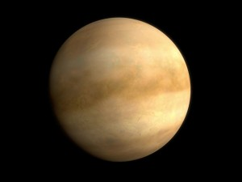

Uranus
Uranus| Attributes | Mercury | Venus | Uranus |
Neptune |
| Mass (kg) | 3.30 x 1023 | 4.87 x 1024 | 8.68 x 1025 | 1.02 x 1026 |
| Diameter (km) | 4,879.4 | 12,104 | 51,118 | 49,528 |
| Mean Density (kg/m3) | 5,420 | 5,250 | 1,290 | 1,640 |
| Escape Velocity (m/s) | 4,300 | 10,400 | 21,300 | 23,300 |
| Average Distance from the Sun | 0.387 AU (57,909,175 km) | 0.723 AU (108,208,930 km) | 19.19 AU (2,870,972,200 km) | 30.07 AU (4,498,252,900 km) |
| Rotation Period (length of day in Earth days) | 58.65 | 243.02 (retrograde) | 0.72 (17.9 Earth hours) (retrograde) | 0.67 (16.1 Earth hours) |
| Revolution Period (length of year in Earth days) | 87.97 | 224.7 | 30,685 (84 Earth years) | 60,190 (164.8 Earth years) |